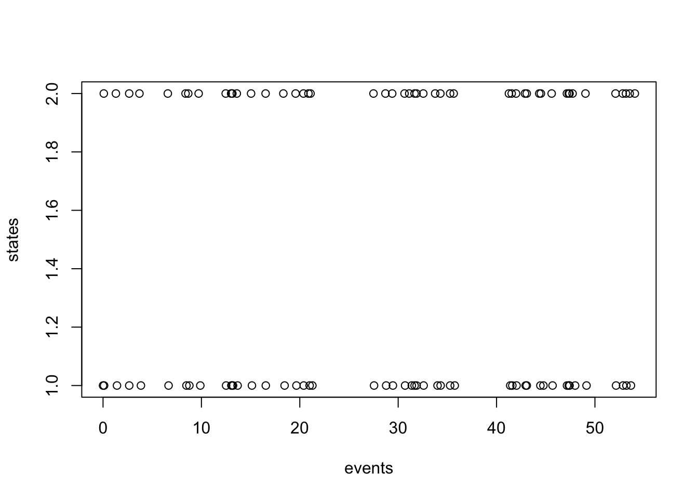

Q <- matrix(c(-1,10,1,-10), nrow=2, byrow=T)Simulating event times
An essential aspect of stochastic character mapping is simulating events in Markov chains. We have seen that we can calculate transition probabilities along branches of a phylogeny, and that these can be used to determine the the probability of particular configurations of states at the internal nodes and tips of a tree. Armed with a Markov model and the transition probabilities that can be calculated from its generator, we can simulate configurations of states at internal nodes.
Exercises
1.
Using a tree of your choice (simulated or otherwise), as well as data describing states of the tips, fit a Markov model of trait change using ace. Use the values in lik.anc to randomly sample configurations of internal node states. Is this equivalent to simulating evolution in the demo “Fitting and simulating Markov models on tees ucing ancestral character estimation (ace)?” Why or why not?
The strategy for stochastic character mapping relies on a different method of simulation than either strategy outlined in the previous exercise. Rather than determining states using transition probabilities for a fixed branch length, stochastic character mapping simulates a Markov model in continuous time.
To illustrate this idea, let’s begin with a simple 2-state Markov chain.
The output of this simulation is going to be a list/vector/whatever of event times. We start at time zero. I’m going to decide at the outset that I want to simulate 100 changes of state, so we will have 100 event times.
events <- rep(0, 100)
states <- rep(1,100)We have to decide whether to start in state 1 or state 2. I have declared that we start in state 1 above.
Because the rates of our stochastic rate matrix Q are constant in time, the time until each event is described by an exponential distribution. The process we are about to simulate is known as a . In our case, the rate could be different depending on the current state the sytem is in.
If we are currently in state 1, the time until the next event, i.e. the time until a transition to state 2, follows \(T \sim q_{21} e^{-q_{21}t}\), and if we are currently in state 2, the time until a transition to state 1 follows $T q_{12} e^{-q_12t}
Exercise
3.
Verify that the \(q_{ij}\) convention used in the previous sentence matches your intuition (and that I have not made a mistake).
for(i in 2:100){
state=states[i-1]
events[i] <- events[i-1] + rexp(1, rate= -Q[state, state])
states[i] <- if(state==1){2}else{1}
}
dat <- cbind(events, states)
plot(states~events,dat)
Exercise
4.
Plot the simulation contained in dat from the previous exercise in a way that captures left continuity (i.e. that the times in events coincide with the state changes into the state in the same row)
This is the essence of stochastic character mapping – but with one crucial piece missing so far.
The general strategy for simulating character mappings is to use a two step approach. Step one: simulate a configuration of internal node states using a method similar to the ones alluded to at the start of this demo. Step two: simulate character mappings by simulating state transitions in continuous time in the manner just above, but while also ensuring that the start and end states of the process match with the nodal states at either end of a particular branch.
Exercise
5.
Modify the event time simulation to run for a pre-specified amount of time (or branch length) and an undetermined number of events. Simulate realizations of the stochastic process that accomodate predefined initial and final states. (Hint: the strategy originally described just tosses out any trajectories that don’t satisfy boundary conditions for a particular branch.) (Using the term ``boundary conditions’’ to mean the node states at either end of a branch.)
5b
If the configuration of node states associated with a particular branch imlpy at least one state change, is there a convenient way to modify the event time simulator to always simulate at least one state change?
6.
In simulating a stochastic character mapping, does it matter which direction we simulate from? Mathematically, there is no reason why we couldn’t use tip states as initial conditions, but that doesn’t really seem consistent with evolution occurring in forward time. Are there situations where the two approaches are equivalent? Why or why not?